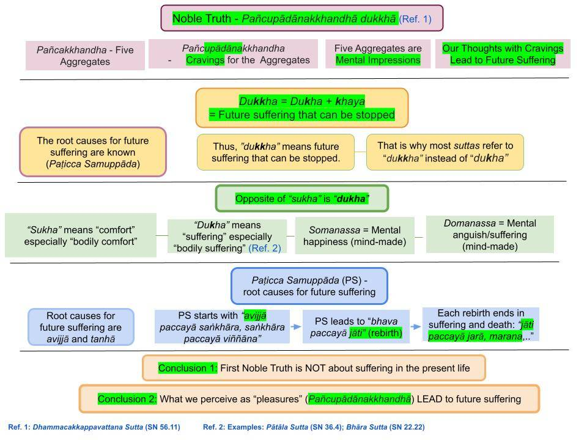

The essence of Buddhism (Buddha Dhamma) is in the first sutta delivered by the Buddha, Dhammacakkappavattana Sutta. We discuss the verse "saṅkhittena pañcupādānakkhandhā dukkhā" in detail.
October 23, 2018; rewritten with chart March 3, 2023; revised August 26, 2024
Suffering That Can be Eliminated

Download/Print: "4. Dukkha - Future Suffering"
1. This sutta states the Four Noble Truths in summary form. It takes a determined effort to understand them. This post will focus on the verse stating the First Noble Truth.
- In particular, we highlight that this verse is about "suffering" that can be stopped from arising.
- The Pāli word for "suffering" is "dukha" (with one k.) The word dukkha (with two k's) means "suffering that can be eliminated" (dukha + khaya.)
- Not many suttās use the word "dukha" because the ability to escape that suffering is always emphasized with "dukkha." In the "Pātāla Sutta (SN 36.4)," dukha is used to describe the painful feelings present in the apāyās (pātāla or the "abyss.") More examples in "Does the First Noble Truth Describe only Suffering?"
First Noble Truth in Just a Single Verse!
2. Let us examine how the Buddha summarized the First Noble Truth about suffering in the "Dhammacakkappavattana Sutta (SN 56.11)."
"Idam kho pana, bhikkhave, dukkhaṃ ariya saccam:
jātipi dukkhā, jarāpi dukkhā, byādhipi dukkho, maraṇampi dukkhāṃ, appiyehi sampayogo dukkho, piyehi vippayogo dukkho, yampicchaṃ na labhati tampi dukkhāṃ—saṅkhittena pañcupādānakkhandhā dukkhā."
Translated: Bhikkhus, What is the Noble Truth of Suffering?
"Birth is suffering, getting old is suffering, getting sick is suffering, dying is suffering. Having to associate with things one dislikes is suffering and separation from those one likes. If one does not get what one likes/craves/desires, that is suffering - in brief, the origin of suffering is the craving for the five aggregates of rūpa, vedanā, saññā, saṅkhāra, viññāna (pancupādānakkhandha). Pancupādānakkhandha (upādāna or craving/desire for pancupādānakkhandha) represents all we crave in this world.
- The fact that pancupādānakkhandha represents one's world is discussed in "The Five Aggregates (Pañcakkhandha)." But read this post first.
- (Here, I have translated upādāna as craving. However, the word upādāna cannot be represented by just one word. It is a good idea to grasp the meaning. See "Concepts of Upādāna and Upādānakkhandha.")
- There are four sections in that verse. I have highlighted alternating parts to explain each of the four below.
The Key Aspect of Suffering
3. The first part in bold indicates what we consider forms of suffering: Birth, getting old, getting sick, and dying.
- Every birth ends up in death. That is why rebirth is suffering. All births -- without exception -- end up in death.
- We also DO NOT LIKE to get old, get sick, and do not like to die. If we experience any of those, that is suffering.
- We WOULD LIKE it to stay young, not get old, not get sick, and not die ever. If we can have those conditions fulfilled, we will be forever happy.
- Therefore, it is clear that the Buddha focused on the suffering associated with the rebirth process in his first discourse.
One Aspect of Suffering - Not Getting What One Desires
4. Anyone can see that not getting what one desires/craves is suffering.
- The second part of the verse in #2 (in black) says: Having to associate with things that one does not like is suffering, and having to separate from those one wants is suffering. That must be evident to all.
- That is stated in one concise statement in the third part of the verse in #2 (in red): "yampicchaṃ na labhati tampi dukkhaṃ."
Yampiccam na labhati tampi dukkham
5. "Yampicchaṃ na labhati tampi dukkhaṃ" is a shortened version of the verse (that rhymes). The complete sentence is "Yam pi icchaṃ na labhati tam pi dukkhaṃ."
- "Yam pi icchaṃ" means "whatever is liked or craved for." "Na labhati" means "not getting." "tam pi dukkhaṃ" means "that leads to suffering."
- Therefore, that verse says: "If one does not get what one likes/craves/desires, that leads to suffering."
- That is a more general statement and applies to any situation. We can see that in our daily lives. We wish to hang out with people we like, and being with people we do not like is stressful.
- Furthermore, the more one craves something, the more suffering one will endure. But this requires a lot of discussion.
- Note that "iccha" (and "icca") is pronounced "ichcha." See "Tipiṭaka English” Convention Adopted by Early European Scholars – Part 1" and Part 2 there.
6. Thus, the "Yampiccam nalabhati tampi dukkhaṃ" ("Yam pi icchaṃ na labhati tam pi dukkhaṃ") verse gets us closer to the deeper meaning of the First Noble Truth on suffering.
- Note that icca and iccha (ඉච්ච and ඉච්ඡ in Sinhala) are used interchangeably in the Tipiṭaka. The word "iccha" with the emphasis on the last syllable (with "h") indicates "strong icca" or "strong attachment."
- The word "icca" (liking) is closely related to "taṇhā" (getting attached). Tanhā happens automatically because of icca.
- Not getting what one desires or craves is the opposite of "icca" or "na icca" or "anicca." That is the same way that "na āgami" becomes "Anāgāmi" ("na āgami" means "not coming back"; but in the context of Anāgāmi, it means "not coming back to kāma lōka or the lowest 11 realms. Both these are examples of Pāli sandhi rules (connecting two words).
Connection to the Anicca Nature
7. Therefore, even though we like/desire (icca/iccha) some things in this world, those expectations are not met in the long run. In particular, we have to give up everything at least at death.
- That is why the intrinsic nature of this world is "anicca." When we don't get what we desire, we suffer. That suffering is UNAVOIDABLE in two situations: (i) at death, we will have to leave all we crave, and (ii) even though we don't like to be reborn in "suffering-filled realms," that is where most rebirths take place. That is why the world is of an "anicca nature" and leads to dukkha.
- However, we wrongly believe that the world is of a "nicca nature," i.e., our desires/expectations can be attained AND maintained. Thus, another (and related) way to explain anicca as the opposite of "nicca"; see "Three Marks of Existence – English Discourses."
"Sankittena Pancupadanakkhandha Dukkha"
8. The last part of the verse in #2, "saṅkhittena pañcupādānakkhandhā dukkhā," will take much more explaining. One first needs to understand pañcakkhandhā (the five aggregates of rūpa, védanā, sañña, saṅkhāra, viññāna) even to begin to understand this part.
- Here, pañcupādānakkhandhā is entirely mental and defines one's world.
- Pañcupādānakkhandhā (pañca upādāna khandhā) includes all that we crave in the world! We accumulate bad kamma (via abhisaṅkhāra) to fulfill our cravings and do not realize that it is why we are trapped in this suffering-filled rebirth process!
- Most people have no idea what pañcakkhandhā and pañcupādānakkhandhā mean.
- These concepts are discussed in detail in "The Five Aggregates (Pañcakkhandha)." We will discuss this in detail again in this series: "Buddhism – In Charts."
9. Each person's world is what one experiences, i.e., the five aggregates/pañcupādānakkhandhā of rūpa, védanā, sañña, saṅkhāra, viññāna.
- Some of our experiences (i.e., pañcupādānakkhandhā) are mind-pleasing, and we attach to them further after the upādāna stage. Such stronger attachments lead to strong kamma generation (via vaci and kaya kamma), leading to rebirth and more suffering. See "Purāna and Nava Kamma – Sequence of Kamma Generation." Thus, future suffering cannot be stopped until we understand the details of this process (Paṭicca samuppāda). That understanding (the Buddha himself reached upon Buddhahood) leads to the end of the rebirth process and the end of future suffering.
- After explaining the four Noble Truths (we briefly discussed just the First Noble Truth), the Buddha says in the middle of the sutta: "Ñāṇañca pana me dassanaṃ udapādi: 'akuppā me vimutti, ayamantimā jāti, natthi dāni punabbhavo'" ti."
Translated: "The knowledge and vision arose in me: 'unshakable is the liberation of my mind. This is my last birth. There is no more renewed existence.'"
Misconceptions on Dukkha Sacca, Pancakkhandha, and Pancupadanakkhandha
10. Many think that Dukkha Sacca (the First Noble Truth, pronounced “dukkha sachcha”) says everything is suffering. That is not true; there are a lot of "pleasures" to enjoy in this world.
- The first three parts of the verse in #2 that summarize the First Noble Truth explain that there is "hidden suffering" in the world that an average person would not see. Even though people celebrate birthdays, we get closer to death with each birthday passing. Even though we desire to be with those we love forever, separation from them is inevitable, at least at death.
- The last part of the verse is the critical part of the First Noble Truth. It is not a type of suffering but the root cause of (future) suffering. We become subjected to suffering because we attach to certain rupa in this world and also to vedanā, saññā, saṅkhāra, and viññāna that arise from interactions with such rupa. That is pañcupādānakkhandhā (pañca upādāna khandhā), loosely meaning "attachment to the pañcupādānakkhandhā."
- Also, see "Does the First Noble Truth Describe only Suffering?" and "First Noble Truth is Suffering? Myths about Suffering."
We Don't See the "Hidden Suffering" in Sensory Pleasures
11. That is until a Buddha explains it! The Buddha gave the following analogy to describe the "hidden suffering" humans don't see.
- When a fish bites bait, it does not see the suffering hidden in that action. Looking from the ground, we can see the whole picture and know what will happen to the fish if it bites the bait. But the fish cannot see that whole picture and thus does not see the hidden suffering (the hook hidden in the bait.) It can only see the bait (a delicious bit of food.)
- In the same way, if we do not know about the wider world of 31 realms (with the suffering-laden four lowest realms) and that we have gone through unimaginable suffering in those realms in the past, we only focus on what is easily accessible to our six senses.
- That analogy is in the “Baḷisa Sutta (SN 17.2).”
- Further details in "Is Suffering the Same as the First Noble Truth on Suffering?" and "Does the First Noble Truth Describe only Suffering?"
- The mindless translation of "dukkha" as "suffering." everywhere (without understanding that the primary reference is to the "suffering in the rebirth process") has led to confusion, such as whether an Arahant is free of "all suffering" even while living. Another confusion is what is meant by "Nibbāna." It simply means "the end of the rebirth process." All suffering ends with the death of Arahant.
A Sutta Is a Highly Condensed Summary
12. Some people think the Buddha recited each sutta as it appears in the Tipiṭaka. That could be why suttās are translated word-by-word by most translators today. But that is far from the truth.
- As we saw above, Dhammacakkappavattana sutta is highly condensed (as many suttās are). Even a single verse takes a lot of explaining. Further analysis of the sutta in this subsection: "Dhammacakkappavattana Sutta."
- The Buddha delivered Dhammacakkappavattana Sutta to the five ascetics over several days. See "The Life of the Buddha" by Bhikkhu Nānamoli." A direct account from the Tipiṭaka at "The Long Chapter (Mahākhandhaka);" see "Section 6. The account of the group of five."
- Only Ven. Kondañña attained the Sōtapanna stage on the first night. Then the Buddha explained the material over several days. The other four ascetics reached the Sōtapanna stage over several days.
- The above book contains many passages from the Vinaya Piṭaka of the Tipiṭaka, which provide many details unavailable in the suttās. It also provides the timeline of critical suttās and significant events.
13. Therefore, the Buddha did not recite each sutta as it appears in the Tipiṭaka. If so, it would have been delivered within 15 minutes! Instead, the discussion of the sutta continued for several days until all five ascetics attained the Sotapanna stage. Attaining magga phala is not a magical process. In particular, the Sotapanna stage requires only understanding the worldview of the Buddha.
- It will take many people a lifetime to fully understand the Dhammacakkappavattana sutta.
- We must remember that many generations transmitted all the suttās in the Tipiṭaka orally. Tipiṭaka was written down about 500 years after the Parinibbāna of the Buddha. See "Preservation of the Dhamma."
- It appears that the Buddha summarized the material in each sutta concisely to a limited number of verses suitable for oral transmission (easy to remember); see "Sutta Interpretation – Uddēsa, Niddēsa, Paṭiniddēsa."
- Summarized verses must be explained in detail by those who have understood them. As we have seen, even single words like "anicca" and "dukkha" need detailed explanations (not merely "impermanence" and "suffering.") Those words DO NOT have corresponding single words in other languages. We must use those Pāli words with an understanding of their meanings.
A essência do Buddhismo (Buddha Dhamma) está no primeiro Sutta proferido pelo Buddha, o Dhammacakkappavattana Sutta. Discutimos o versículo “saṅkhittena pañcupādānakkhandhā dukkhā” em detalhes.
23 de outubro de 2018; reescrito com tabela em 3 de março de 2023; revisado em 26 de agosto de 2024
O sofrimento que pode ser eliminado
Baixar/Imprimir: “4. Dukkha – Sofrimento Futuro”
1. Este Sutta apresenta as Quatro Nobres Verdades de forma resumida. É necessário um esforço determinado para compreendê-las. Este ensaio se concentrará no versículo que expõe a Primeira Nobre Verdade.
- Em particular, destacamos que este versículo trata do “sofrimento” cujo surgimento pode ser impedido.
- A palavra em Pālī para “sofrimento” é “dukha” (com um k). A palavra Dukkha (com dois k’s) significa “sofrimento que pode ser eliminado” (dukha + Khaya).
- Poucas Suttā usam a palavra “Dukkha”, pois a capacidade de escapar desse sofrimento é sempre enfatizada com “Dukkha”. No “Pātāla Sutta (SN 36.4)”, dukha é usada para descrever as sensações dolorosas presentes nos apāyās (pātāla ou o “abismo”). Mais exemplos em “A Primeira Nobre Verdade descreve apenas o sofrimento?”.
A Primeira Nobre Verdade em Apenas Um Único Verso!
2. Vamos examinar como o Buddha resumiu a Primeira Nobre Verdade sobre o sofrimento no “Dhammacakkappavattana Sutta (SN 56.11)”.
“Idam kho pana, bhikkhave, dukkhaṃ Ariya saccam:
o nascimento é dukkhā, o envelhecimento é dukkhā, a doença é dukkhā, a morte é dukkhā, a união com o indesejável é dukkhā, a separação do desejável é dukkhā, e não obter o que se deseja também é dukkhā — em resumo, os cinco agrupamentos das condições condicionadas são dukkhā.”
Tradução: Bhikkhūs, o que é a Nobre Verdade do Sofrimento?
“O nascimento é sofrimento, o envelhecimento é sofrimento, a doença é sofrimento, a morte é sofrimento. Ter que conviver com coisas de que se não gosta é sofrimento, assim como a separação daqueles de quem se gosta. Se não se obtém o que se gosta/anseia/deseja, isso é sofrimento — em resumo, a origem do sofrimento é o anseio pelos cinco agregados de Rūpa, Vedanā, Saññā, Saṅkhāra, viññāna (pancupādānakkhandha). Pancupādānakkhandha (Upādāna ou ânsia/desejo por pancupādānakkhandha) representa tudo o que ansiamos neste mundo.
- O fato de que pancupādānakkhandha representa o mundo de cada um é discutido em “Os Cinco Agregados (Pañcakkhandha)”. Mas leia este ensaio primeiro.
- (Aqui, traduzi Upādāna como “desejo”. No entanto, a palavra Upādāna não pode ser representada por apenas uma palavra. É uma boa ideia compreender o significado. Veja “Conceitos de Upādāna e Upādānakkhandha”.)
- Há quatro seções nesse verso. Destaquei partes alternadas para explicar cada uma das quatro a seguir.
O aspecto fundamental do sofrimento
3. A primeira parte em negrito indica o que consideramos formas de sofrimento: nascer, envelhecer, adoecer e morrer.
- Todo nascimento termina em morte. É por isso que o Renascimento é sofrimento. Todos os nascimentos — sem exceção — terminam em morte.
- Também NÃO GOSTAMOS de envelhecer, adoecer e morrer. Se passarmos por qualquer uma dessas situações, isso é sofrimento.
- GOSTARÍAMOS de permanecer jovens, não envelhecer, não adoecer e nunca morrer. Se pudéssemos ter essas condições atendidas, seríamos felizes para sempre.
- Portanto, fica claro que o Buddha se concentrou no sofrimento associado ao processo de Renascimento em seu primeiro discurso.
Um aspecto do sofrimento — não conseguir o que se deseja
4. Qualquer pessoa pode perceber que não conseguir o que se deseja/anseia é sofrimento.
- A segunda parte do verso no nº 2 (em preto) diz: Ter que conviver com coisas das quais não se gosta é sofrimento, e ter que se separar daqueles que se deseja é sofrimento. Isso deve ser evidente para todos.
- Isso é afirmado em uma frase concisa na terceira parte do verso do nº 2 (em vermelho): “yampicchaṃ na labhati tampi dukkhaṃ”.
Yampiccam na labhati tampi dukkham
5. “Yampicchaṃ na labhati tampi dukkhaṃ” é uma versão abreviada do versículo (que rima). A frase completa é “Yam pi icchaṃ na labhati tam pi dukkhaṃ”.
- “Yam pi icchaṃ” significa “tudo o que se gosta ou se almeja”. “Na labhati” significa “não conseguir”. “Tam pi dukkhaṃ” significa “isso leva ao sofrimento”.
- Portanto, esse verso diz: “Se alguém não consegue o que gosta/deseja/almeja, isso leva ao sofrimento.”
- Essa é uma afirmação mais geral e se aplica a qualquer situação. Podemos observar isso em nossas vidas cotidianas. Desejamos estar com pessoas de quem gostamos, e estar com pessoas de quem não gostamos é estressante.
- Além disso, quanto mais alguém anseia por algo, mais sofrimento terá de suportar. Mas isso requer uma longa discussão.
- Observe que “Ichcha” (e “icca”) é pronunciado “Ichcha”. Consulte “Convenção do ‘Tipiṭaka em Inglês’ adotada pelos primeiros estudiosos europeus – Parte 1” e Parte 2.
6. Assim, o versículo “Yampiccam nalabhati tampi dukkhaṃ” (“Yam pi icchaṃ na labhati tam pi dukkhaṃ”) nos aproxima do significado mais profundo da Primeira Nobre Verdade sobre o sofrimento.
- Observe que “icca” e “iccha” (ඉච්ච e ඉච්ඡ em Cingalês) são usados de forma intercambiável no Tipiṭaka. A palavra “iccha”, com ênfase na última sílaba (com “h”), indica “icca forte” ou “apego forte”.
- A palavra “icca” (gostar) está intimamente relacionada a “Taṇhā” (apegar-se). Taṇhā ocorre automaticamente por causa de icca.
- Não obter o que se deseja ou anseia é o oposto de “icca”, ou “na icca”, ou “Anicca”. Da mesma forma que “na āgami” se torna “Anāgāmi” (“na āgami” significa “não voltar”; mas, no contexto de Anāgāmi, significa “não voltar para kāma lōka ou para os 11 reinos mais baixos”. Ambos são exemplos das regras de sandhi do Pālī (ligação entre duas palavras).
Conexão com a Natureza de Anicca
7. Portanto, embora gostemos/desejemos (icca/iccha) algumas coisas neste mundo, essas expectativas não são atendidas a longo prazo. Em particular, temos que abrir mão de tudo, pelo menos na morte.
- É por isso que a natureza intrínseca deste mundo é “Anicca”. Quando não conseguimos o que desejamos, sofremos. Esse sofrimento é INEVITÁVEL em duas situações: (i) na morte, teremos que deixar para trás tudo o que almejamos, e (ii) mesmo que não gostemos de renascer em “reinos repletos de sofrimento”, é lá que a maioria dos renascimentos ocorre. É por isso que o mundo é de “natureza Anicca” e leva ao Dukkha.
- No entanto, acreditamos erroneamente que o mundo tem uma “natureza nicca”, ou seja, que nossos desejos/expectativas podem ser alcançados E mantidos. Assim, outra maneira (e relacionada) de explicar Anicca como o oposto de “nicca”; veja “Três Marcas da Existência – Discursos em Inglês”.
“Sankittena Pancupadanakkhandha Dukkha”
8. A última parte do verso no nº 2, “saṅkhittena pañcupādānakkhandhā dukkhā”, exigirá uma explicação muito mais detalhada. Primeiro, é preciso compreender pañcakkhandhā (os cinco agregados de Rūpa, védanā, sañña, Saṅkhāra, viññāna) para sequer começar a entender essa parte.
- Aqui, pañcupādānakkhandhā é inteiramente mental e define o mundo de cada um.
- Pañcupādānakkhandhā (pañca Upādāna Khandhā) inclui tudo aquilo que desejamos no mundo! Acumulamos Kamma ruim (por meio de Abhisaṅkhāra) para satisfazer nossos desejos e não percebemos que é por isso que estamos presos nesse processo de renascimento repleto de sofrimento!
- A maioria das pessoas não tem ideia do que significam pañcakkhandhā e pañcupādānakkhandhā.
- Esses conceitos são discutidos em detalhes em “Os Cinco Agregados (Pañcakkhandha)”. Discutiremos isso novamente em detalhes nesta série: “Buddhismo – Em Gráficos”.
9. O mundo de cada pessoa é o que ela experimenta, ou seja, os cinco agregados/pañcupādānakkhandhā: Rūpa, védanā, sañña, Saṅkhāra e viññāna.
- Algumas de nossas experiências (ou seja, pañcupādānakkhandhā) são agradáveis à mente, e nos apegamos ainda mais a elas após o estágio de Upādāna. Esses apegos mais fortes levam à geração intensa de Kamma (por meio do vaci e do kaya kamma), levando ao Renascimento e a mais sofrimento. Veja “Purāna e Nava Kamma – Sequência da Geração de Kamma”. Assim, o sofrimento futuro não pode ser interrompido até que compreendamos os detalhes desse processo (Paṭicca Samuppāda). Essa compreensão (que o próprio Buddha alcançou ao atingir a Iluminação) leva ao fim do processo de Renascimento e ao fim do sofrimento futuro.
- Após explicar as Quatro Nobres Verdades (discutimos brevemente apenas a Primeira Nobre Verdade), o Buddha diz no meio do Sutta: “Ñāṇañca pana me dassanaṃ udapādi: ‘akuppā me Vimutti, ayamantimā Jāti, natthi dāni punabbhavo’ ti.”
Tradução: “O conhecimento e a visão surgiram em mim: ‘Inabalável é a libertação da minha mente. Este é o meu último nascimento. Não há mais renascimento.’”
Equívocos sobre Dukkha Sacca, Pancakkhandha e Pancupadanakkhandha
10. Muitos pensam que a Dukkha Sacca (a Primeira Nobre Verdade, pronunciada “dukkha sachcha”) diz que tudo é sofrimento. Isso não é verdade; há muitos “prazeres” para desfrutar neste mundo.
- As três primeiras partes do verso no nº 2, que resumem a Primeira Nobre Verdade, explicam que há um “sofrimento oculto” no mundo que uma pessoa comum não perceberia. Embora as pessoas comemorem aniversários, a cada aniversário que passa nos aproximamos mais da morte. Embora desejemos ficar para sempre com aqueles que amamos, a separação deles é inevitável, pelo menos na morte.
- A última parte do versículo é a parte essencial da Primeira Nobre Verdade. Não se trata de um tipo de sofrimento, mas da causa raiz do sofrimento (futuro). Ficamos sujeitos ao sofrimento porque nos apegamos a certos Rūpa neste mundo e também a Vedanā, Saññā, Saṅkhāra e viññāna que surgem das interações com tais Rūpa. Isso é pañcupādānakkhandhā (pañca Upādāna Khandhā), que significa, em termos gerais, “apego aos pañcupādānakkhandhā”.
- Veja também “A Primeira Nobre Verdade descreve apenas o sofrimento?” e “A Primeira Nobre Verdade é o sofrimento? Mitos sobre o sofrimento”.
Não percebemos o “sofrimento oculto” nos prazeres sensoriais
11. Isso até que um Buddha explique! O Buddha apresentou a seguinte analogia para descrever o “sofrimento oculto” que os seres humanos não enxergam.
- Quando um peixe morde a isca, ele não vê o sofrimento oculto nessa ação. Olhando da superfície, podemos ver o quadro completo e sabemos o que acontecerá com o peixe se ele morder a isca. Mas o peixe não consegue ver esse quadro completo e, portanto, não vê o sofrimento oculto (o anzol escondido na isca). Ele só consegue ver a isca (um pedaço delicioso de comida).
- Da mesma forma, se não conhecemos o mundo mais amplo dos 31 reinos (com os quatro reinos mais baixos, repletos de sofrimento) e não sabemos que já passamos por sofrimentos inimagináveis nesses reinos no passado, focamos apenas no que é facilmente acessível aos nossos seis sentidos.
- Essa analogia está no “Baḷisa Sutta (SN 17.2)”.
- Mais detalhes em “O sofrimento é o mesmo que a Primeira Nobre Verdade sobre o sofrimento?” e “A Primeira Nobre Verdade descreve apenas o sofrimento?”.
- A tradução irrefletida de “Dukkha” como “sofrimento” em todos os lugares (sem compreender que a referência principal é ao “sofrimento no processo de Renascimento”) levou a confusões, como, por exemplo, se um Arahant está livre de “todo sofrimento” mesmo enquanto vive. Outra confusão é o que se entende por “Nibbāna”. Significa simplesmente “o fim do processo de renascimento”. Todo sofrimento termina com a morte do Arahant.
Um Sutta é um resumo altamente condensado
12. Algumas pessoas pensam que o Buddha recitou cada Suttā exatamente como aparece no Tipiṭaka. Talvez seja por isso que as Suttās são traduzidas palavra por palavra pela maioria dos tradutores atualmente. Mas isso está longe de ser verdade.
- Como vimos acima, o Dhammacakkappavattana Sutta é altamente condensado (como muitas Suttā). Até mesmo um único verso requer muita explicação. Análise mais aprofundada do sutta nesta subseção: “Dhammacakkappavattana Sutta”.
- O Buddha proferiu o Dhammacakkappavattana Sutta aos cinco ascetas ao longo de vários dias. Consulte “A Vida do Buddha”, de Bhikkhu Nānamoli. Um relato direto do Tipiṭaka em “O Capítulo Longo (Mahākhandhaka)”; veja “Seção 6. O relato do grupo dos cinco”.
- Apenas o Venerável Kondañña alcançou o estágio de Sotāpanna na primeira noite. Em seguida, o Buddha explicou o conteúdo ao longo de vários dias. Os outros quatro ascetas alcançaram o estágio de Sotāpanna ao longo de vários dias.
- O livro acima contém muitas passagens do Vinaya Piṭaka do Tipiṭaka, que fornecem muitos detalhes não disponíveis nos Suttās. Ele também apresenta a linha do tempo dos Suttās essenciais e dos eventos significativos.
13. Portanto, o Buddha não recitou cada Sutta exatamente como aparece no Tipiṭaka. Se assim fosse, a pregação teria durado apenas 15 minutos! Em vez disso, a discussão do Sutta continuou por vários dias até que todos os cinco ascetas alcançassem o estágio de Sotāpanna. Alcançar o Magga Phala não é um processo mágico. Em particular, o estágio de Sotāpanna requer apenas a compreensão da visão de mundo do Buddha.
- Muitas pessoas levarão uma vida inteira para compreender plenamente o Dhammacakkappavattana Sutta.
- Devemos lembrar que muitas gerações transmitiram oralmente todos os suttās do Tipiṭaka. O Tipiṭaka foi registrado por escrito cerca de 500 anos após o Parinibbāna do Buddha. Veja “Preservação do Dhamma”.
- Parece que o Buddha resumiu o conteúdo de cada Sutta de forma concisa a um número limitado de versos adequados para a transmissão oral (fáceis de memorizar); consulte “Interpretação do Sutta – Uddēsa, Niddēsa, Paṭiniddēsa”.
- Os versos resumidos devem ser explicados em detalhes por aqueles que os compreenderam. Como vimos, mesmo palavras isoladas como “Anicca” e “Dukkha” precisam de explicações detalhadas (não apenas “impermanência” e “sofrimento”). Essas palavras NÃO têm correspondentes em palavras isoladas em outras línguas. Devemos usar essas palavras em Pālī com uma compreensão de seus significados.